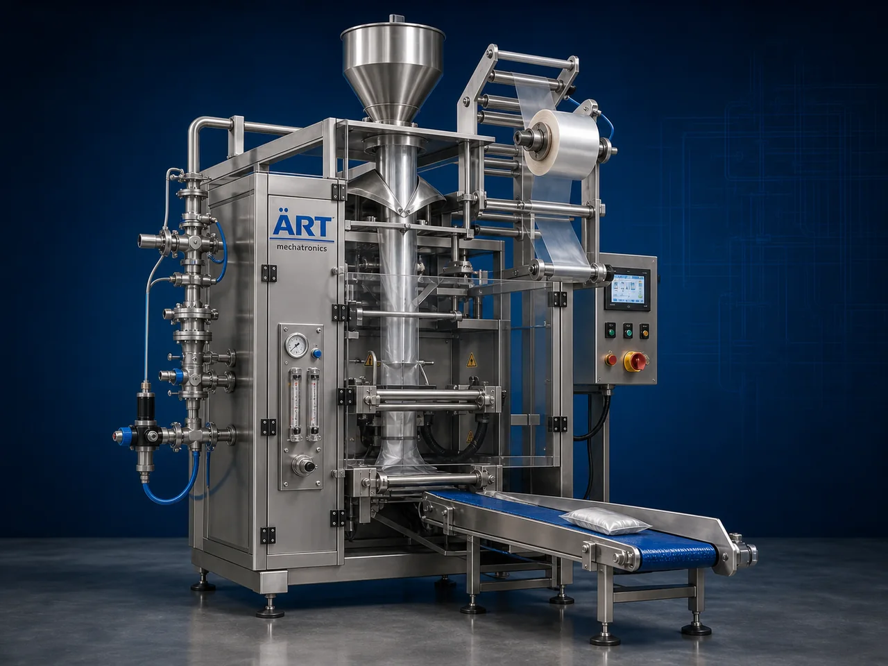

Nitrogen Filled Packing Machine (Automatic Nitrogen Flushing & Airtight Packaging System)
A Nitrogen Filled Packing Machine, also known as a Nitrogen Flushing Packaging Machine, Nitrogen Gas Packing Machine, or Modified Atmosphere Packaging Machine, is an advanced industrial packaging solution designed for nitrogen flushing, oxygen reduction, airtight pouch sealing, shelf-life enhancement, freshness preservation, and premium packaging applications.

About the Nitrogen Packing
Nitrogen filled packaging systems are widely used for:
- Nitrogen flushing packaging
- Airtight food packaging
- Shelf-life extension
- Freshness preservation
- Oxygen-free packaging
- Premium retail packaging
The machine improves:
- Product shelf life
- Product freshness
- Packaging quality
- Moisture protection
- Oxidation prevention
- Product hygiene
Industrial nitrogen filled packing machines use:
- Nitrogen gas flushing systems
- Precision sealing technology
- Servo or pneumatic synchronization
- PLC and HMI automation controls
- Airtight pouch sealing mechanisms
to replace oxygen inside packaging pouches with nitrogen gas for superior freshness protection and long-term product preservation.
Nitrogen filled packing machines are widely used in industries such as:
Snack food industries
Pan masala & mouth freshener industries
Food processing industries
Spice industries
Dry fruits & nuts industries
FMCG industries
Pharmaceutical industries
Export packaging industries
where freshness retention and moisture-free packaging are essential.
The machine is highly suitable for:
- Namkeen packaging
- Chips packaging
- Pan masala packaging
- Dry fruit packaging
- Spice packaging
- Premium snack packaging
ART Mechatronics offers high-performance nitrogen filled packing machines, engineered for continuous industrial operation, superior freshness protection, airtight sealing quality, and reliable long-term packaging performance.
Working Principle of Nitrogen Filled Packing Machine
Products are filled into:
- Laminated pouches
- Pillow packs
- Stand-up pouches
- Snack packaging pouches
Nitrogen gas is injected into pouch before sealing
Nitrogen replaces oxygen inside package to preserve freshness and prevent oxidation.
Machine helps protect:
- Food freshness
- Product crunchiness
- Aroma retention
- Product texture
- Shelf life stability
Precision sealing system creates: Airtight seals Leak-proof packaging Moisture-resistant sealing
System controls: Nitrogen flushing timing Gas pressure Sealing temperature Packaging speed Product synchronization
Nitrogen-flushed products discharged automatically for: Cartoning Retail display Export packaging Dispatch operations
Types of Nitrogen Filled Packing Machines
- 1. Nitrogen Flushing Band Sealer
Designed for: ✔ Continuous nitrogen flushing pouch sealing operations
- 2. Nitrogen Filled VFFS Machine
Suitable for: ✔ High-speed vertical packaging applications
- 3. Nitrogen Flow Wrap Packaging Machine
Uses: ✔ Snack and pillow pack packaging applications
- 4. Food Grade Nitrogen Packaging Machine
Designed for: ✔ Hygienic food and pharmaceutical packaging systems
- 5. Servo Driven Nitrogen Packaging Machine
Suitable for: ✔ High-speed precision nitrogen packaging systems
- 6. Fully Automatic Nitrogen Packaging System
Designed for: ✔ Complete industrial freshness packaging automation lines
Industries Using Nitrogen Filled Packing Machines
🍟 Snack Food Industry Chips, namkeen, popcorn, makhana, roasted snacks, and extruded snack packaging systems 🌿 Pan Masala & Mouth Freshener Industry Pan masala, supari, elaichi, and mouth freshener freshness packaging systems 🌶️ Spice Industry Turmeric, chilli powder, herbs, seasoning, and spice freshness packaging systems 🥜 Dry Fruits & Nuts Industry Almonds, cashews, pistachios, peanuts, and dry fruit packaging systems 🍃 Food Processing Industry Ready-to-eat, cereals, pulses, flour, and ingredient packaging systems 🛒 FMCG Industry Consumer product airtight packaging systems 💊 Pharmaceutical Industry Sensitive healthcare and nutraceutical packaging systems 📦 Export Packaging Industry Long shelf-life export packaging systems
Features & Advantages
- Superior freshness preservation technology
- Extends product shelf life significantly
- Prevents moisture and oxidation damage
- Maintains crunchiness and aroma retention
- High-speed automatic packaging operation
- Accurate nitrogen flushing and airtight sealing
- Supports multiple pouch types and sizes
- Hygienic food-grade construction available
- Reliable long-term industrial performance
Technical Highlights
Machine Type: Nitrogen flushing band sealer Nitrogen VFFS machine Nitrogen flow wrap machine Packaging Material: Laminated films Metalized films Nitrogen barrier pouches Pillow pack films Features: Nitrogen gas flushing system PLC control system Touchscreen HMI Airtight sealing system Adjustable gas timing Packaging Style: Pillow pack Stand-up pouch Center seal pouch Vacuum nitrogen packaging Automation: Semi-automatic Fully automatic industrial systems
Turnkey Nitrogen Packaging Solutions
ART Mechatronics offers: Complete nitrogen packaging systems Freshness preservation packaging solutions Packaging automation integration systems Conveyor synchronization systems Installation & commissioning After-sales service &AMC
Why Choose Art Mechatronics
Expertise in industrial packaging and freshness preservation systems Customized nitrogen packaging solutions for multiple industries High-performance and durable packaging technology Advanced PLC and gas flushing automation systems Proven industrial packaging performance across sectors
Applications
Snack Food Manufacturing Plants Pan Masala Manufacturing Units Spice Processing Industries Dry Fruit Packaging Units FMCG Packaging Facilities Export Packaging Industries
Get pricing & specs for the Nitrogen Packing
Share the product, target capacity, current process and plant location. These details help our engineers discuss the right machine or line configuration.
One partner, from design to start-up
ART Mechatronics designs, manufactures, installs and commissions your Nitrogen Packing solution with regional presence in India, UAE and Thailand.